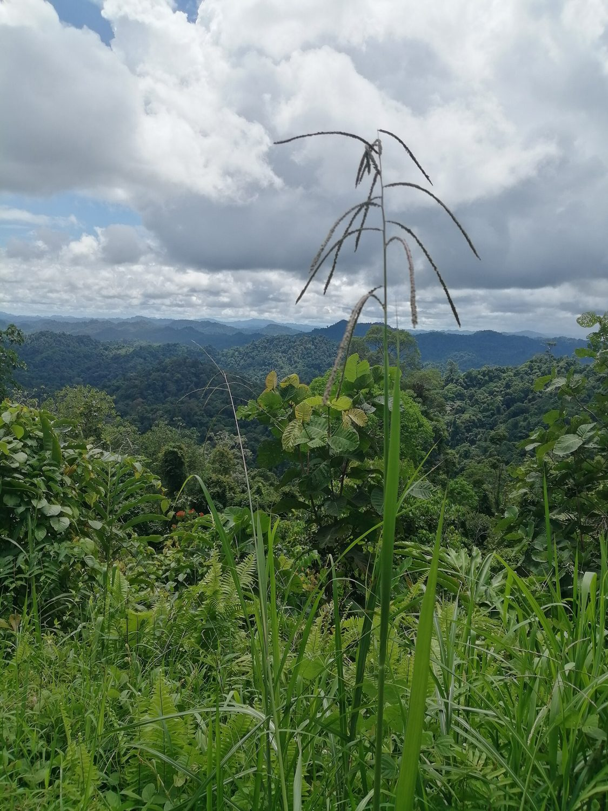
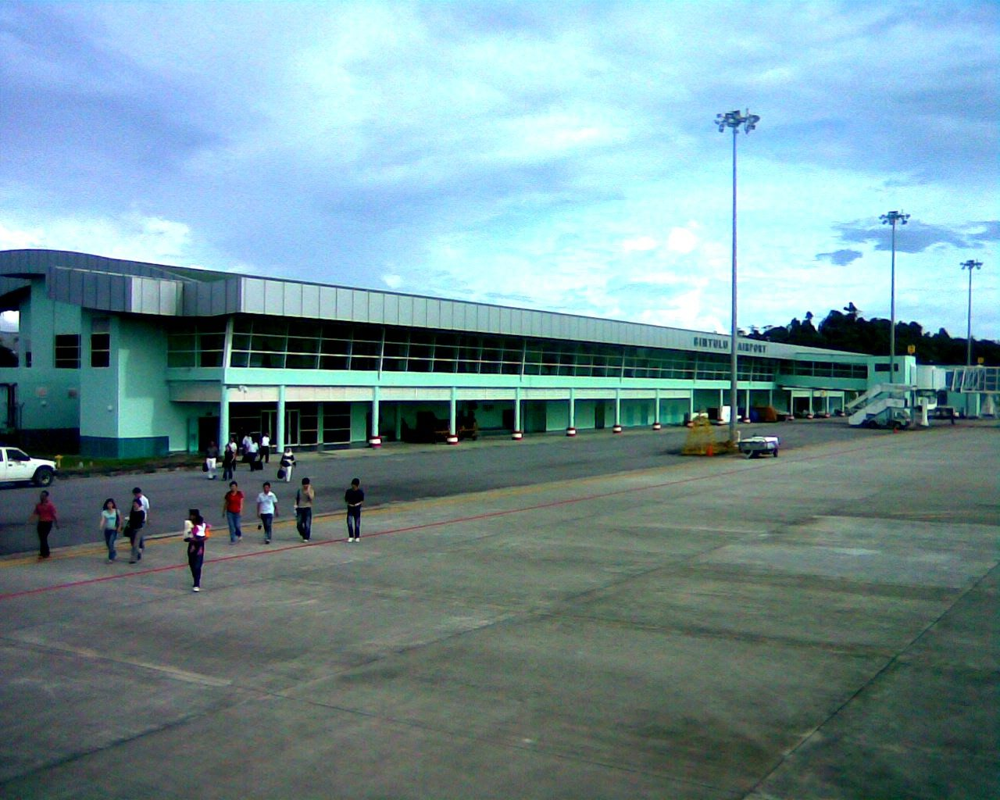
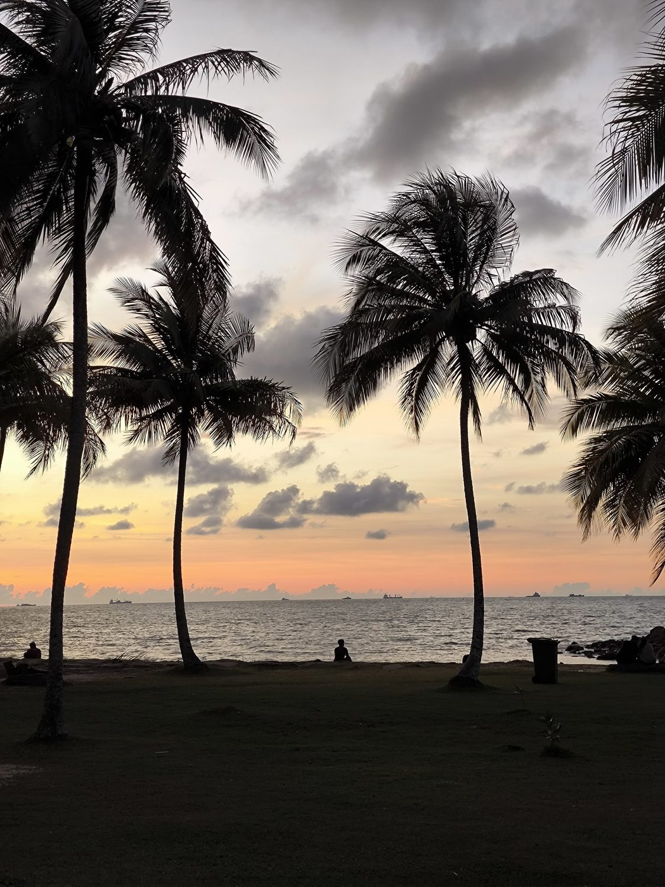
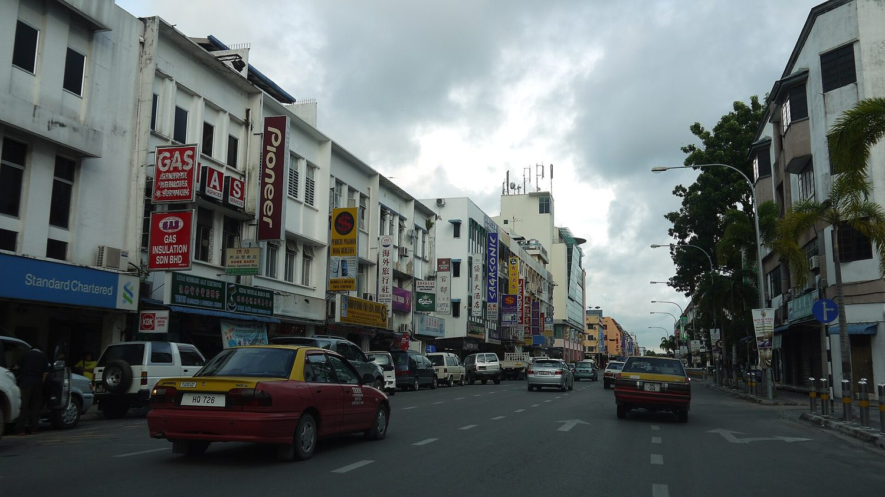
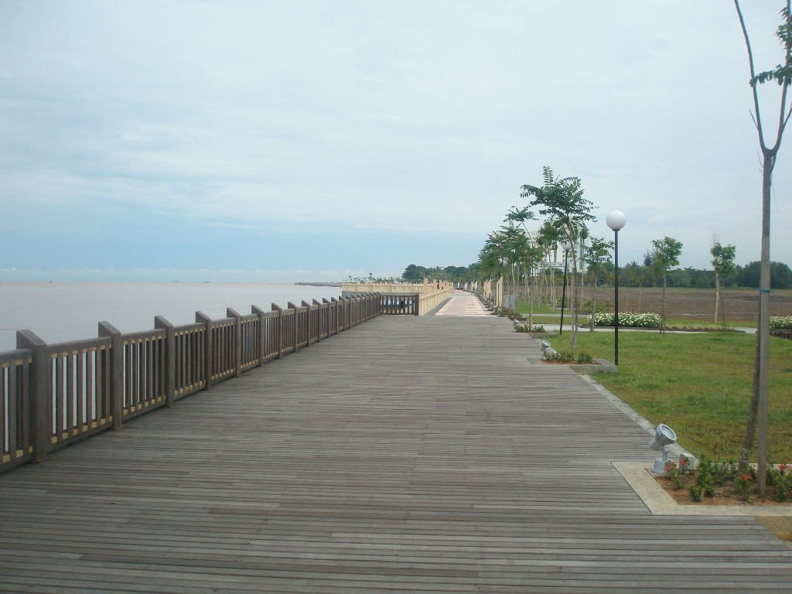
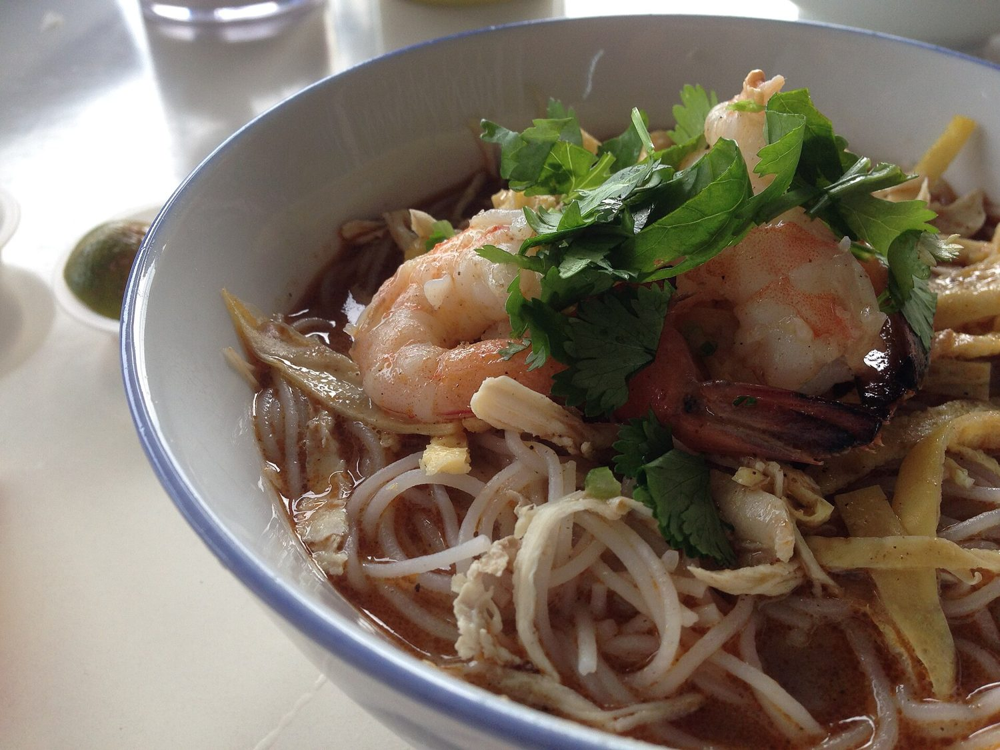
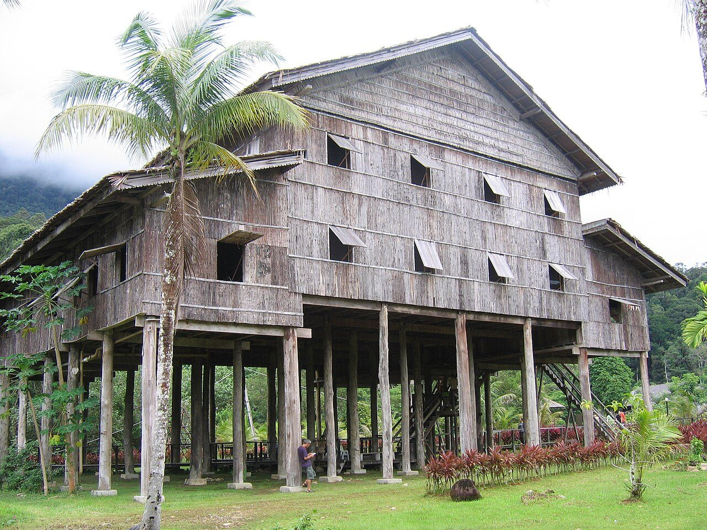
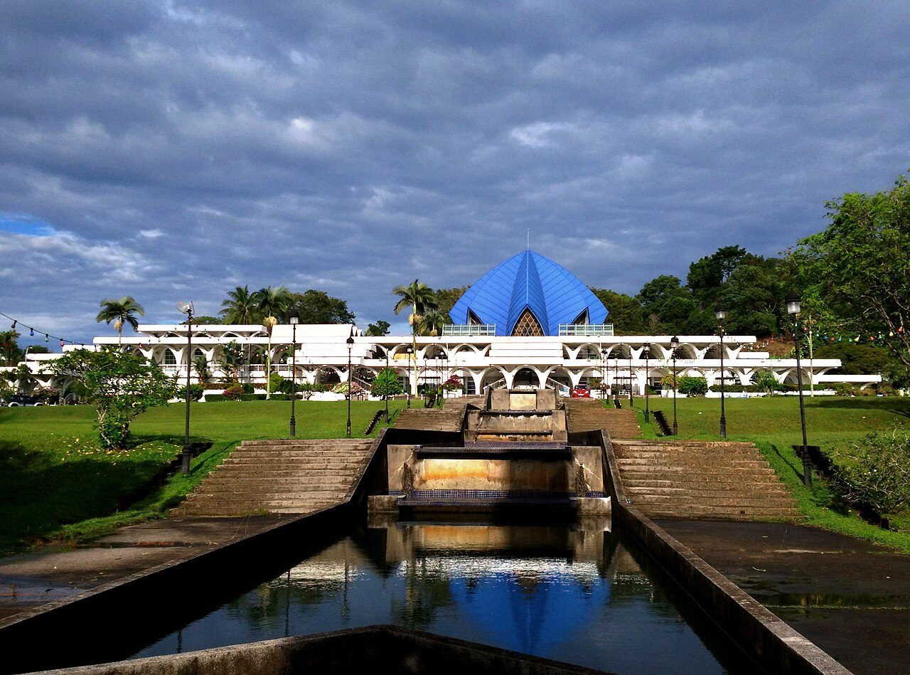
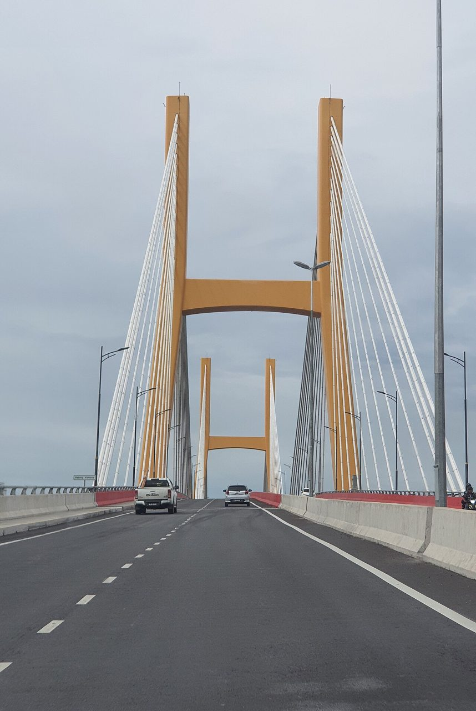

Touch down from KL. Carry-on only (7 kg each) unless checked bags were added, so you should be out fast.
Open in Maps →The Avis pickup is fixed at 3:00 PM and the car is your only transport, so the group stays put. Have lunch at the terminal café and let people nap, charge phones and repack.
Desk is inside the airport, so you drive straight out — no Grab or taxi needed all trip. Main driver: Khairulmuzzamil. Check the car over and confirm the Day 3 return time.
Jalan Tanjung Batu, minutes from the beach. Drop bags, rinse off the flight, and head straight back out while the light holds.
Open in Maps →
Bintulu's own beach, five minutes from the hotel. Palms, open sand and the South China Sea — the best free thing you'll do all trip. Stay for the sunset.
Open in Maps →
Skip the tourist seafood restaurants. Hit the night market and hawker stalls downtown — satay, grilled fish, mee goreng — for a fraction of the price and better flavour.
Open in Maps →
A long boardwalk along the water. Sea breeze, city lights, and nothing to pay. Easy way to end day one.
Open in Maps →
The room rate has no breakfast, so eat at a local kopitiam — this is the morning for laksa Sarawak or kolo mee. Then buy bread, fruit and water at a supermarket for the park; food inside is limited and pricier.
The heart of the trip. Jungle boardwalks, hornbills and macaques, and trails opening onto Golden Beach and Turtle Beach. Entry is only RM10 — walk the marked trails yourselves instead of hiring a guide and it stays cheap.
Eat the lunch you packed at the park's shelters, then walk off the rest of the afternoon on the coastal trail.

A riverside Melanau community across the Kemena, known for sago and belacan. Wander, watch the boats, buy a snack from a stall. Costs nothing but the drive.
Open in Maps →
Bintulu's landmark mosque, best in late light. Dress modestly; women should bring a scarf.
Open in Maps →
A river cruise runs RM85–110 a head. Instead, watch the sun go down over the Kemena from the bridge area — same river, same light, no fee — then eat at a hawker centre.
Open in Maps →Nasi lemak, roti bakar and kopi. Cheapest and best breakfast in Malaysia.
Open in Maps →Sarawak black pepper, terubuk crackers, jungle produce and handwoven crafts — souvenirs at market prices, not gift-shop prices. Haggle politely.
Open in Maps →Back to the Imperial for bags and checkout. The cut-off is 1:00 PM — don't lose track of time at the market.
Open in Maps →One last long table at a shophouse restaurant in town before you point the car at the airport.
Open in Maps →Refuel before you arrive — returning it short of fuel costs far more. Drop the car at the terminal, then check in. Batik Air suggests arriving ~2 hours before departure.
Open in Maps →All confirmed and already paid for.
Flights, hotel, car and insurance are already paid. This is all that's left.
| What | Per person | All 7 |
|---|---|---|
| Food, 3 days | RM90–130 | RM630–910 |
| Park entry | RM10 | RM70 |
| Fuel share | RM15–25 | RM105–175 |
| Total | RM115–165 | RM805–1,155 |